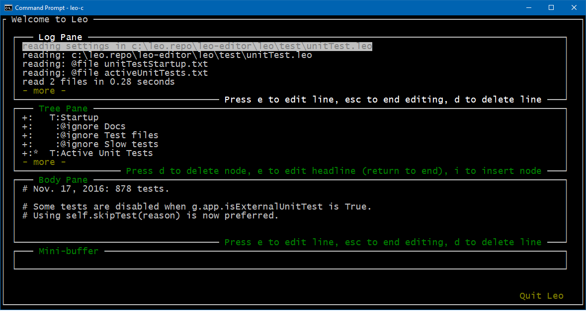

Leo’s Console Gui¶
This chapter describes Leo’s console gui. This allows Leo to be run remotely.
Here is a screen shot:

The area between colons in the Tree pane corresponds to Leo’s icon box:
+: : node has unexpanded children.
-: : node is expanded.
: : node has no children.
'* : node is the selected node.
: C : node is a clone.
: M : node is marked.
: T: node has body text.
System requirements¶
Leo’s Console minimal dependencies are:
For windows, install windows-curses with pip install windows-curses.
PythonTk for clipboard handling For Linux use your system package manager, e.g. sudo apt install python-tk.
Starting Leo with the console gui¶
Resize your console/terminal to a recommended minimum size of 100x35. Leo will crash on startup if there are fewer than 34 rows.
Launch Leo with the
--gui=consolecommand-line option:>launchleo.py --gui=console [path to leo file\file_name.leo]
If no .leo file is given, Leo will open ~/.leo/workbook.leo (Leo’s workbook file). Initially, this file contains Leo’s cheat sheet and an example from the rst3 tutorial.
Only one outline can be open at a time. The only way to load .leo files is from the command line. (There are no menus).
Exiting Leo & saving files¶
To exit Leo: click “Quit Leo” button and <Enter>. Ctrl-Q also works. There is no way to cancel Ctrl-Q. A dialog box will appear. Press Enter to select “No”. Press arrow keys to move between “Yes” and “No”. “Yes” saves, then exits. “No” Exits without saving.
Leo key bindings¶
Supported Ctrl commands:
Ctrl-B (execute-script).
Ctrl-F (find)
Ctrl-Q (quit-leo)
Ctrl-S (save) Works for windows cmd.exe, but not Consolez.
Unsupported Ctrl commands:
Alt-S,
Ctrl-Shift-S
Ctrl-O
Shift arrows
Limitations¶
This plugin suffers from fundamental limitations, as discussed in the following sections…
Curses limitations¶
The curses module supports only simple control characters. Ctrl-S will work, Alt-S, Ctrl-Shift-S etc. will not. These limitations can not be fixed.
npyscreen limitations¶
The npyscreen package defines widgets with limited capabilities:
npyscreen does not support selection ranges in text!
Shift arrows are not supported, because there are no selection ranges.
Cut/paste is theoretically supported, but in the absence of selections only paste might work. And paste may work only in limited contexts…
Editing the log or body pane is a bit strange. You switch between tabs with tab or shift-tab. Type ‘e’ to edit edit mode, as shown on the on-screen prompts.
Edit mode defines a range of lines that are being edited. Hitting return extends the range. Initially, the range consists of a single line, with the cursor at the end of the line. Moving outside the range with up/down arrow keys ends editing. Doing a more Leonine job would require a complete rewrite of the base classes.
Deleting a line is not possible in edit mode. Use ‘d’ outside of edit mode to delete a line in the log or body panes.
The body text is not syntax colored.
Unfixed bugs¶
The following bugs have resisted serious efforts to fix them. I will work on them further only if they cause serious difficulties to those who use the console gui.
Shifting focus to the minibuffer after Ctrl-F works initially, but thereafter Tab and Shift-Tab don’t work as expected until all widgets have been visited. A workaround is to navigate to the minibuffer before using Ctrl-F, but this is not a perfect fix either.
After startup, the output from g.es correctly goes to the log widget, but it is scrolled out of view!
Broadcasting and listening¶
The console gui sends the output of g.pr and g.trace to another console. To do this, you must start a socket listener in the other console, listening to the broadcaster on localhost:
Leo Qt (listener) <-- Leo console, (broadcaster)
To set this up:
In the listener console, start a regular Leo Qt session with the
--listen-to-logcommand-line option. You can start a listener at any time with Leo’slisten-to-logcommand. Thekill-log-listenercommand kills the listener, if it exists.In the broadcast console, start Leo with the console gui using the
--gui=consolecommand-line option. This automatically starts the broadcaster.
If the listener is active, the log output from the curses gui console will be displayed in the listener’s console.
Developing the cursesGui2 plugin¶
The following sections discuss will be of interest only to those who want to enhance the cursesGui2.py plugin. All others can safely ignore this discussion.
The post: Debugging npyscreen apps using two consoles discusses the strategy used to bootstrap this plugin. It’s easier to develop now that so much is working, but developing this code will always be difficult.
The console gui code stands “between” the npyscreen code and Leo’s core code. With only very minor exceptions, Leo’s core and the npyscreen code must remain completely unchanged. Thus, the console gui wraps just about everything. This makes the plugin’s code inherently complex, but this complexity can not be helped.
Important: It would pointless to describe the code in detail. Devs must come up to speed on their own by studying traces. Don’t even think of trying to remember details. Instead, use cff to study the code.
Tracing is essential¶
You can not use g.pdb to debug cursesGui2.py, for two reasons:
g.pdb’s output would overwrite the screen. Writing to the second console would not help because…
There would be no way to get input to pdb.
As a result, devs must uses traces to figure out what is happening. The Broadcasting and listing section tells how to send traces to a second console. Use only g.pr and g.trace to create traces. Do not use print statements in cursesGui2.py.
Noteworthy functions and methods¶
The following methods contain crucial traces:
IH.handle_input (external/npyscreen/wgwidget.py) shows the raw input to npyscreen.
k.masterKeyHandler (leoKeys.py) shows the keys passed to Leo’s core.
k.masterCommand (leoKeys.py) shows the Leo command (if any) bound to the raw key.
Other noteworthy methods and functions, all in cursesGui2.py:
CGui.createCursesTop creates the main window by calling a helper for each part of the main window. The helpers handle the extremely complex details of setting and/or injecting ivars into various classes. Getting these ivars right is the heart of the plugin.
LeoMiniBuffer.h_return contains a crucial hack that allows the minibuffer to be used both to enter commands and to enter find strings.
The top-level es, pr and trace functions replace g.es, g.pr and g.trace functions so that they send their results to the second console.
CGui.monkeyPatch contains some hacks needed to make the ‘start-find’ command work.
To enable tracing for these methods, and many others, set the trace variable at the start of the method. Feel free to add your own traces in consoleGui2.py.
Running unit tests¶
F4 runs all unit tests. IH.handle_input binds F4 as a special case. All unit tests presently pass when run from the console gui. Devs must run all tests in the console gui before committing any changes to this plugin.